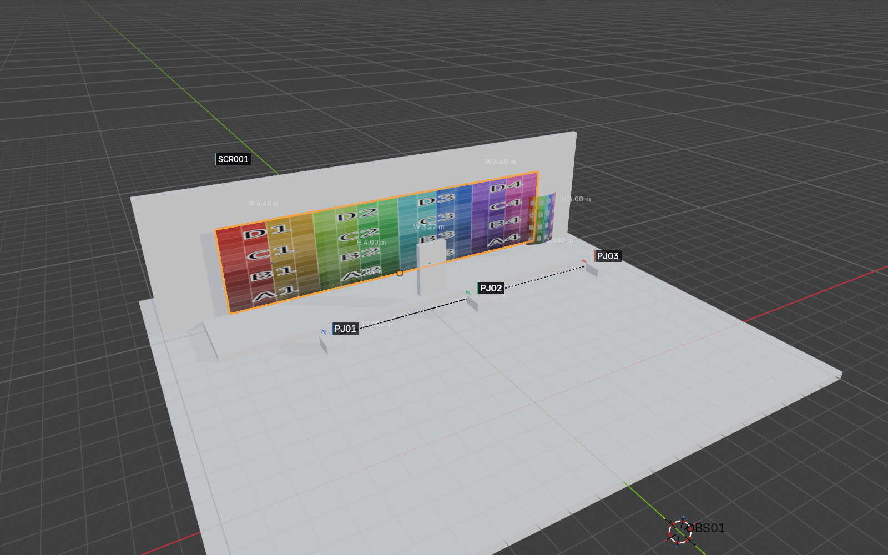
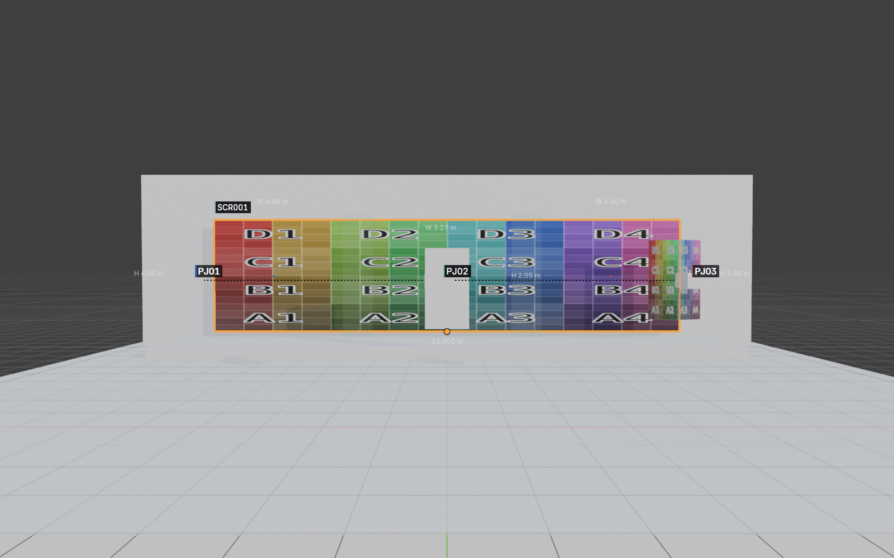
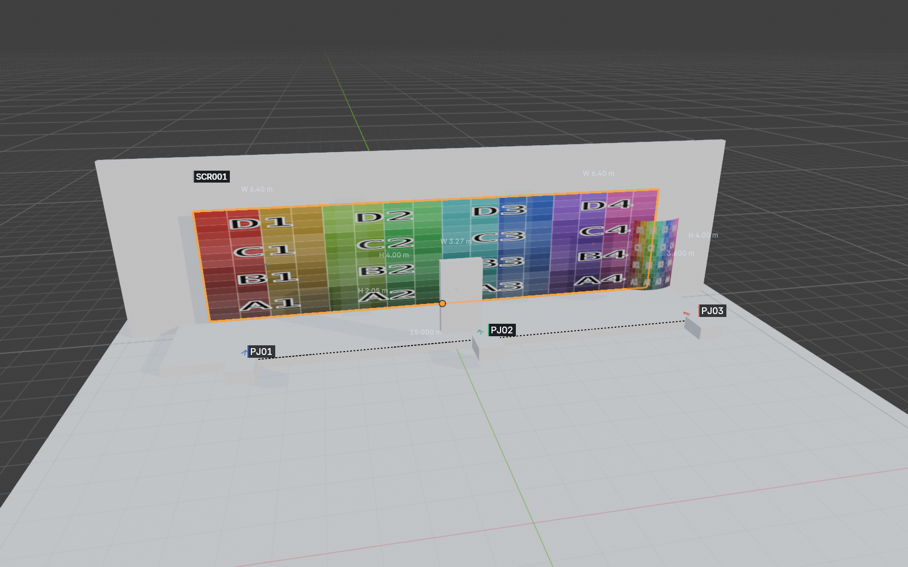
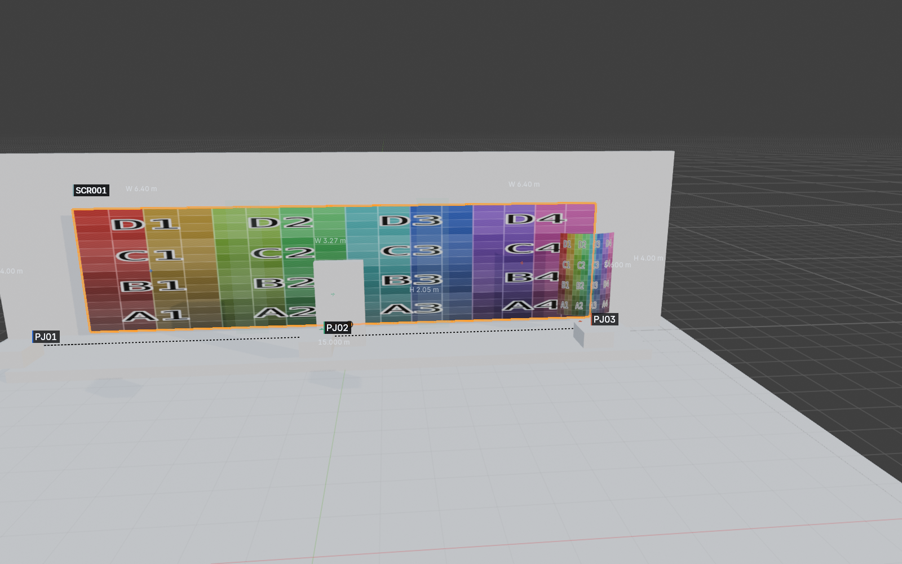
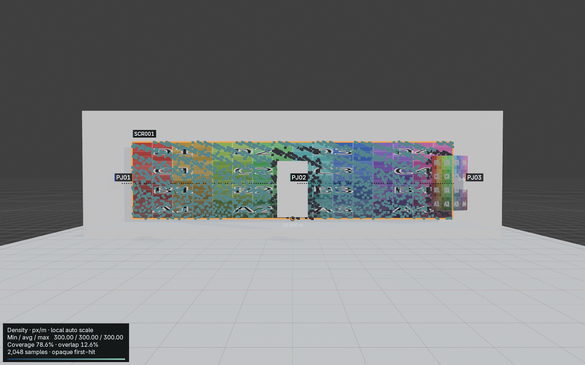
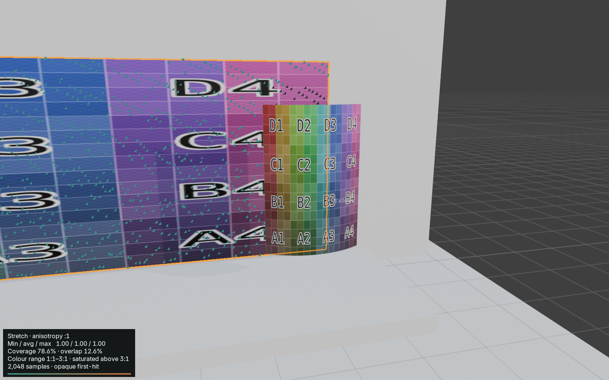
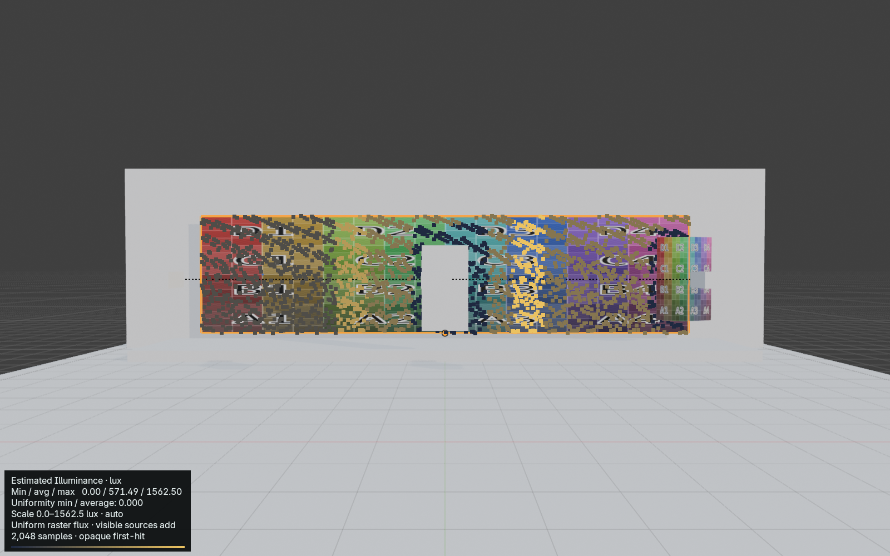
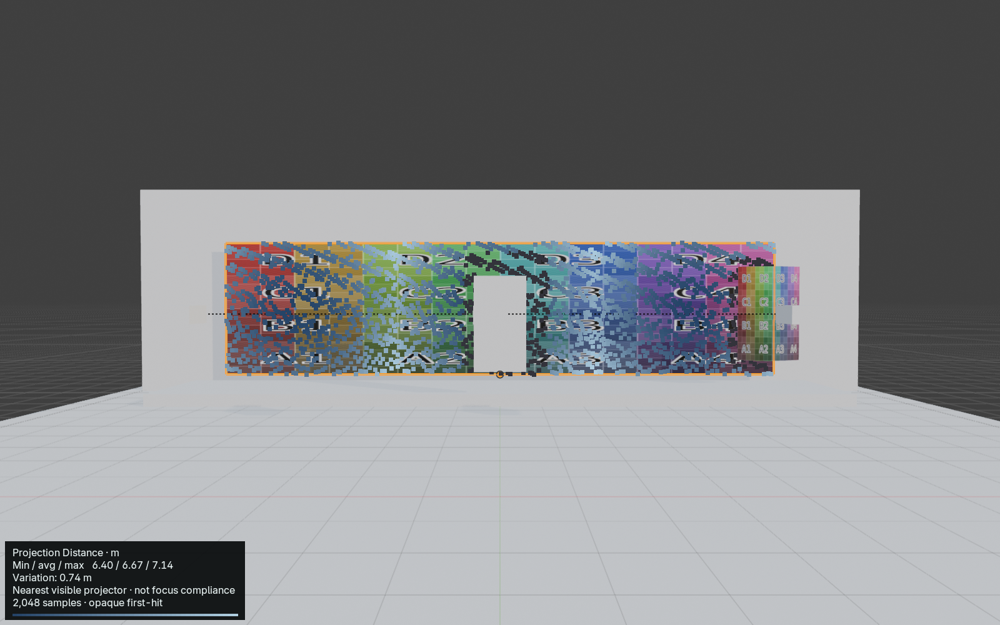
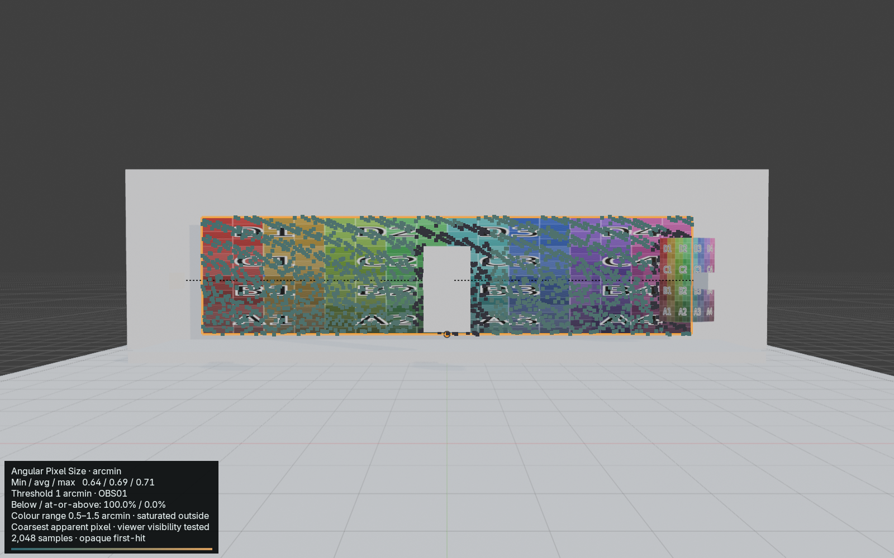

Development beta · 2026-10-25T02:24:46+00:00
Project Name: Beam Training Project · Venue: Twisted Pixel Training · Revision: 0.13 training · Author: Twisted Pixel









| ID | Raster | Ratio | Throw m | Image W × H m | px/m | mm/px | H / V shift % | Lumens | Lux | Notes |
|---|---|---|---|---|---|---|---|---|---|---|
| PJ01 | 1920 × 1200 | 1.00 | 6.40 | 6.40 × 4.00 | 300 | 3.33 | +0.0 / +0.0 | 9,400 | 367 | |
| PJ02 | 1920 × 1200 | 1.00 | 3.27 | 3.27 × 2.05 | 586 | 1.71 | +0.0 / +0.0 | 20,000 | 2,984 | |
| PJ03 | 1920 × 1200 | 1.00 | 6.40 | 6.40 × 4.00 | 300 | 3.33 | +0.0 / +0.0 | 20,000 | 781 |
Shift uses full-image dimensions. Measurements and illuminance are nominal centre values.
| Group | Layout | Pair | Axis | Requested overlap | Actual overlap | Gap m |
|---|---|---|---|---|---|---|
| BG01 | HORIZONTAL | PJ01 / PJ02 | H | 288 px / 0.96 m | 288 px / 0.96 m | 0.00 |
| BG01 | HORIZONTAL | PJ02 / PJ03 | H | 288 px / 0.96 m | 288 px / 0.96 m | 0.00 |
Adjacent-pair overlap is measured on the group reference plane.
| ID | Width m | Height m | Aspect | Notes |
|---|---|---|---|---|
| SCR001 | 15.00 | 3.60 | 4.17 |
| Receiver | Samples | Area m² | Visible coverage | Overlap / surface | Min / avg / max px/m | Max anisotropy | Occluded samples |
|---|---|---|---|---|---|---|---|
| SCR001 | 2048 | 54.00 | 78.6% | 12.6% | 300 / 300 / 300 | 1.00:1 | 21.4% |
Estimated Illuminance · lux · Min / avg / max 0.00 / 571.49 / 1562.50 · Uniformity min / average: 0.000 · Scale 0.0–1562.5 lux · auto · Uniform raster flux · visible sources add · 2,048 samples · opaque first-hit
Projection Distance · m · Min / avg / max 6.40 / 6.67 / 7.14 · Variation: 0.74 m · Nearest visible projector · not focus compliance · 2,048 samples · opaque first-hit
Angular Pixel Size · arcmin · Min / avg / max 0.64 / 0.69 / 0.71 · Threshold 1 arcmin · OBS01 · Below / at-or-above: 100.0% / 0.0% · Colour range 0.5–1.5 arcmin · saturated outside · Coarsest apparent pixel · viewer visibility tested · 2,048 samples · opaque first-hit
Density is conservative worst-direction density. Overlap is a percentage of total surface area.
Nominal projector measurements do not guarantee visible coverage. Surface analysis is sampled, two-sided opaque evaluated geometry; thin occluders and between-sample regions remain untested. Estimated incident illuminance is not photometrically calibrated.
Structured source: beam-study.json. UUIDs identify records; labels are presentation only.